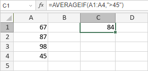

AVERAGEIF funkcija
Funkcija AVERAGEIF je jedna od statističkih funkcija. Koristi se za analizu opsega podataka i pronalaženje prosečne vrednosti svih brojeva u opsegu ćelija, na osnovu zadatog kriterijuma.
Sintaksa
AVERAGEIF(range, criteria, [average_range])
Funkcija AVERAGEIF ima sledeće argumente:
| Argument | Opis |
|---|---|
| range | Izabrani opseg ćelija na koji se primenjuje kriterijum. |
| criteria | Kriterijum koji želite da primenite, vrednost uneta ručno ili sadržana u ćeliji na koju se pozivate. |
| average_range | Izabrani opseg ćelija u kojem treba pronaći prosečnu vrednost. |
Napomene
average_range je opcioni argument. Ako se izostavi, funkcija će pronaći prosek u range.
Kako primeniti funkciju AVERAGEIF.
Primeri
Slika ispod prikazuje rezultat koji vraća funkcija AVERAGEIF.
